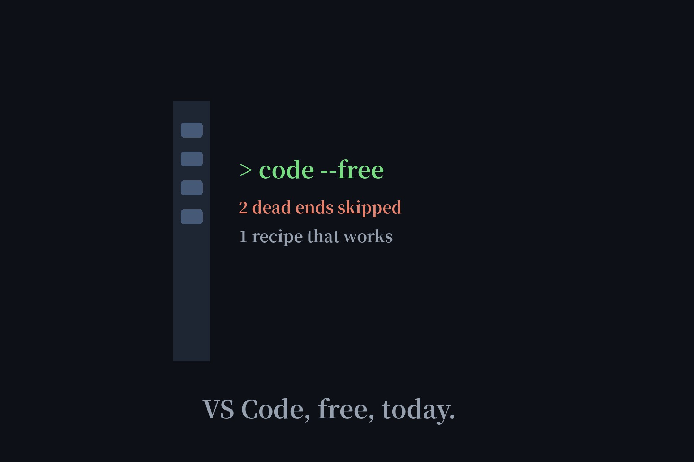

Free AI Coding Agent for VS Code: The Setup That Works in 2026
"Free AI coding agent for VS Code" is one of the most-searched variants of our core keyword — and most guides answer it with tools that no longer exist. We checked the official docs: two of Reddit's favorite answers are dead. Here's the recipe that works today, free, with every step verified.

The recipe (3 steps)
| Step | What | Cost | Account needed? |
|---|---|---|---|
| 1 | Install Cline, Kilo Code, or Continue from the VS Code marketplace | $0, open-source | No |
| 2 | Get a free Gemini API key from Google AI Studio | $0, no card | Google account only |
| 3 | Paste the key into the extension's provider settings | — | — |
Step 1: the extension (free, open-source)
Cline is the original open-source agentic coding extension for VS Code; Kilo Code is the maintained fork that picked up where Roo Code left off; Continue.dev is the minimalist alternative. All three install from the marketplace in one click and charge nothing themselves. They're not LLMs — they're the steering wheel. The engine comes next.
Step 2: the free key (no credit card)
Google AI Studio's free tier is the linchpin: the docs explicitly state no billing account is required, just a Google account — accept the terms and a key is auto-generated. It carries per-model rate limits (requests per minute, tokens per minute, requests per day), which is plenty for personal coding and exactly $0. Our free APIs page lists more no-card options if you outgrow it.
Step 3: connect them (60 seconds)
Open the extension's settings, choose Google Gemini as the provider, paste the key. That's the whole integration — the extension handles the agentic loop (plan, act, verify) while Gemini does the thinking, all inside your editor.
Dead end 1: Roo Code (shut down May 2026)
Roo Code was the Cline fork everyone recommended — past tense. The extension was shut down on May 15, 2026, and roocode.com now redirects to the team's new product. Any guide still listing it is stale. Kilo Code is the living successor; we verified the shutdown in their own docs.
Dead end 2: Firebase Studio (sunsetting)
A 19-vote Reddit best answer recommends Firebase Studio's code mode with its free built-in Gemini. It was true — but Google disabled new signups and workspace creation in June 2026, and the service shuts down entirely in March 2027. Don't start new work on a platform with a published end date.
The zero-key alternative
Want no key at all, not even Google's free one? Swap step 2 for Ollama: run a local model, point the extension at localhost, and there's no account, no cloud, nothing to expire — at the cost of needing your own GPU. We mapped this route fully in our no-API-key test.
FAQ
Is the AI agent in VS Code free?
The extensions are free and open-source — Cline, Kilo Code, and Continue cost nothing to install. What costs money is the model behind them, which is why this guide pairs them with Google AI Studio's free API tier (no credit card required).
Is Roo Code still available?
No. The Roo Code extension was shut down on May 15, 2026, and its domain now redirects to the team's new product. Use Kilo Code (its successor fork), Cline, or Continue instead.
Is Firebase Studio still free for AI coding?
It was, but it's being sunset: new signups and workspace creation were disabled in June 2026, and the service shuts down entirely in March 2027. Don't start new work there.
Do I need a credit card for the Google AI Studio free tier?
No. Google's free tier explicitly requires no billing account — just a Google account. A key is auto-generated when you accept the terms, with per-model rate limits.